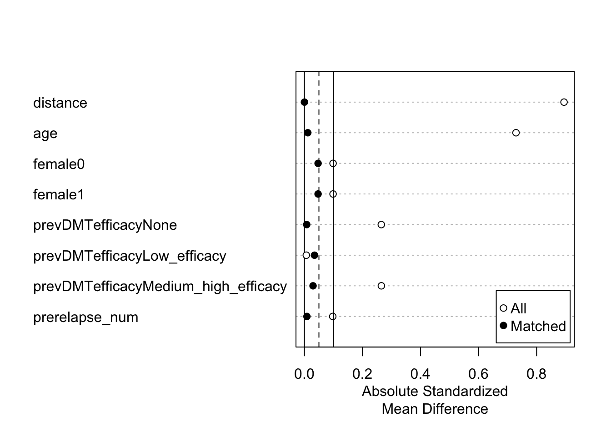
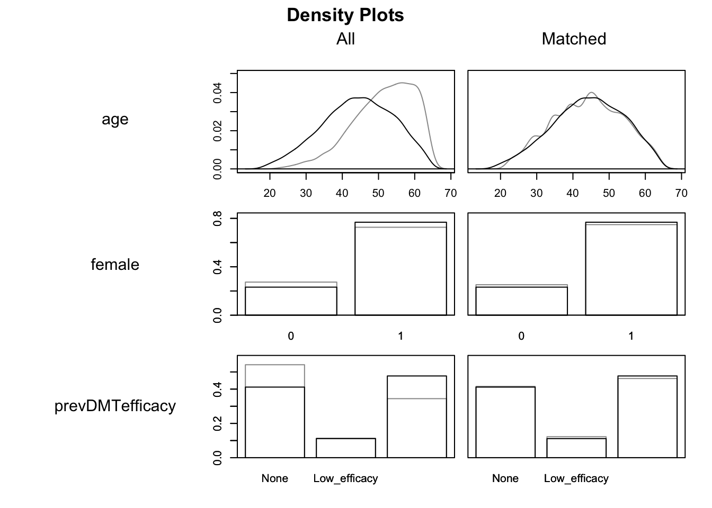

Confounding adjustment using propensity score methods
1 Goal
The purpose of this document is to provide example R code that demonstrates how to estimate the propensity score and implement matching, stratification, weighting, and regression adjustment for the continuous propensity score. In this example using simulated data, we have two disease modifying therapies (DMT1 and DMT0) and the outcome is the number of post-treatment multiple sclerosis relapses during follow-up. We will estimate the average treatment effect in the treated (ATT) using propensity score matching, stratification, and weighting. We will estimate the average treatment effect in the population (ATE) using regression adjustment for the continuous propensity score. The treatment effects can be interpreted as annualized relapse rate ratios (ARR).
We consider an example dataset with the following characteristics:
head(dat) age female prevDMTefficacy premedicalcost numSymptoms prerelapse_num
1: 50 1 None 3899.61 1 1
2: 51 0 None 9580.51 1 0
3: 56 0 None 4785.89 1 0
4: 44 1 None 8696.80 1 1
5: 63 0 None 2588.03 1 0
6: 28 1 None 5435.57 1 0
treatment y years Iscore
1: DMT1 0 1.78507871 Moderate A1
2: DMT1 0 0.01368925 High A1
3: DMT1 2 3.25530459 High A1
4: DMT1 2 5.73853525 Neutral
5: DMT1 0 1.31143053 High A1
6: DMT1 0 0.59137577 Moderate A02 Comparing baseline characteristics
- DMT1 is the treatment group and DMT0 is the control group
prevDMTefficacyis previous DMT efficacy (none, low efficacy, and medium/high efficacy)prerelapse_numis the number of previous MS relapses
| DMT0 | DMT1 | |
|---|---|---|
| n | 2300 | 7700 |
| age (mean (SD)) | 51.39 (8.32) | 44.25 (9.79) |
| female = 1 (%) | 1671 (72.65) | 5915 (76.82) |
| prevDMTefficacy (%) | ||
| None | 1247 (54.22) | 3171 (41.18) |
| Low_efficacy | 261 (11.35) | 858 (11.14) |
| Medium_high_efficacy | 792 (34.43) | 3671 (47.68) |
| prerelapse_num (mean (SD)) | 0.39 (0.62) | 0.46 (0.68) |
3 Estimating the propensity score
3.1 Logistic regression
We sought to restore balance in the distribution of baseline covariates in patients treated with DMT1 (index treatment) and DMT0 (control tratment). We fit a multivariable logistic regression model in which treatment was regressed on baseline characteristics including age, sex, previous DMT efficacy, and previous number of relapses.
# Fit logistic regression model
ps.model <- glm(treatment ~ age + female + prevDMTefficacy + prerelapse_num,
data = dat, family = binomial())
# Summary of logistic regression model
summary(ps.model)
Call:
glm(formula = treatment ~ age + female + prevDMTefficacy + prerelapse_num,
family = binomial(), data = dat)
Deviance Residuals:
Min 1Q Median 3Q Max
-2.7949 0.2585 0.5220 0.7478 1.5033
Coefficients:
Estimate Std. Error z value Pr(>|z|)
(Intercept) 4.809473 0.157127 30.609 < 2e-16 ***
age -0.086708 0.002996 -28.939 < 2e-16 ***
female1 0.253611 0.057664 4.398 1.09e-05 ***
prevDMTefficacyLow_efficacy 0.310394 0.083022 3.739 0.000185 ***
prevDMTefficacyMedium_high_efficacy 0.660266 0.054393 12.139 < 2e-16 ***
prerelapse_num 0.156318 0.039288 3.979 6.93e-05 ***
---
Signif. codes: 0 '***' 0.001 '**' 0.01 '*' 0.05 '.' 0.1 ' ' 1
(Dispersion parameter for binomial family taken to be 1)
Null deviance: 10786 on 9999 degrees of freedom
Residual deviance: 9597 on 9994 degrees of freedom
AIC: 9609
Number of Fisher Scoring iterations: 5# Extract propensity scores
dat$ps <- predict(ps.model, data = dat, type = "response")3.2 Assessing overlap
We examined the degree of overlap in the distribution of propensity scores across treatment groups using histograms and side-by-side box plots.
# Histogram
ggplot(dat, aes(x=ps, fill=as.factor(treatment), color=as.factor(treatment))) +
geom_histogram(alpha=0.3, position='identity', bins=15) +
facet_grid(as.factor(treatment) ~ .) +
xlab("Probability of Treatment") +
ylab("Count") +
ggtitle("Propensity Score Distribution by Treatment Group") +
theme(legend.position = "bottom", legend.direction = "vertical")
# Side-by-side box plots
ggplot(dat, aes(x=as.factor(treatment), y=ps, fill=as.factor(treatment))) +
geom_boxplot() +
ggtitle("Propensity Score Distribution by Treatment Group") +
ylab("Probability of Treatment") +
xlab("Treatment group") +
theme(legend.position = "none")
# Distribution of propensity scores by treatment groups
summary(dat$ps[dat$treatment=="DMT1"]) Min. 1st Qu. Median Mean 3rd Qu. Max.
0.3230 0.7214 0.8265 0.7970 0.9010 0.9854 summary(dat$ps[dat$treatment=="DMT0"]) Min. 1st Qu. Median Mean 3rd Qu. Max.
0.3230 0.5730 0.6894 0.6795 0.7975 0.9799 4 Propensity score matching
4.1 1:1 Optimal full matching without replacement
library(MatchIt)
# Use MatchIt package for PS matching
opt <- matchit(treatment ~ age + female + prevDMTefficacy + prerelapse_num,
data = dat,
method = "full",
estimand = "ATT")
optA matchit object
- method: Optimal full matching
- distance: Propensity score
- estimated with logistic regression
- number of obs.: 10000 (original), 10000 (matched)
- target estimand: ATT
- covariates: age, female, prevDMTefficacy, prerelapse_num4.2 Assess balance after matching
summary(opt)
Call:
matchit(formula = treatment ~ age + female + prevDMTefficacy +
prerelapse_num, data = dat, method = "full", estimand = "ATT")
Summary of Balance for All Data:
Means Treated Means Control Std. Mean Diff.
distance 0.7970 0.6795 0.8943
age 44.2496 51.3883 -0.7289
female0 0.2318 0.2735 -0.0987
female1 0.7682 0.7265 0.0987
prevDMTefficacyNone 0.4118 0.5422 -0.2649
prevDMTefficacyLow_efficacy 0.1114 0.1135 -0.0065
prevDMTefficacyMedium_high_efficacy 0.4768 0.3443 0.2651
prerelapse_num 0.4595 0.3930 0.0976
Var. Ratio eCDF Mean eCDF Max
distance 0.7873 0.1917 0.3379
age 1.3868 0.1519 0.3085
female0 . 0.0417 0.0417
female1 . 0.0417 0.0417
prevDMTefficacyNone . 0.1304 0.1304
prevDMTefficacyLow_efficacy . 0.0020 0.0020
prevDMTefficacyMedium_high_efficacy . 0.1324 0.1324
prerelapse_num 1.1990 0.0133 0.0383
Summary of Balance for Matched Data:
Means Treated Means Control Std. Mean Diff.
distance 0.7970 0.7970 0.0001
age 44.2496 44.1364 0.0116
female0 0.2318 0.2517 -0.0470
female1 0.7682 0.7483 0.0470
prevDMTefficacyNone 0.4118 0.4157 -0.0079
prevDMTefficacyLow_efficacy 0.1114 0.1224 -0.0347
prevDMTefficacyMedium_high_efficacy 0.4768 0.4619 0.0297
prerelapse_num 0.4595 0.4654 -0.0087
Var. Ratio eCDF Mean eCDF Max
distance 0.9955 0.0012 0.0116
age 1.0161 0.0076 0.0260
female0 . 0.0199 0.0199
female1 . 0.0199 0.0199
prevDMTefficacyNone . 0.0039 0.0039
prevDMTefficacyLow_efficacy . 0.0109 0.0109
prevDMTefficacyMedium_high_efficacy . 0.0148 0.0148
prerelapse_num 0.9530 0.0057 0.0110
Std. Pair Dist.
distance 0.0022
age 0.1688
female0 0.5149
female1 0.5149
prevDMTefficacyNone 0.1816
prevDMTefficacyLow_efficacy 0.5944
prevDMTefficacyMedium_high_efficacy 0.4731
prerelapse_num 0.3893
Sample Sizes:
Control Treated
All 2300. 7700
Matched (ESS) 198.89 7700
Matched 2300. 7700
Unmatched 0. 0
Discarded 0. 0plot(summary(opt))
# black line is treated group, grey line is control group
plot(opt, type = "density", which.xs = vars) 
4.3 Estimating the ATT
We can estimate the ATT in the matched sample using Poisson regression in which the number of post-treatment relapses is regressed on treatment status and follow-up time for each patient (captured by the variable years). More details are provided at .
# Matched data
matched.data <- match.data(opt)
# Poisson regression model
opt.fit <- glm(y ~ treatment + offset(log(years)),
family = poisson(link = "log"),
data = matched.data,
weights = weights)
# Treatment effect estimation
opt.comp <- comparisons(opt.fit,
variables = "treatment",
vcov = ~subclass,
newdata = subset(matched.data, treatment == "DMT1"),
wts = "weights",
transform_pre = "ratio")
opt.comp |> tidy()# A tibble: 1 × 9
type term contrast estim…¹ std.e…² stati…³ p.value conf.…⁴ conf.…⁵
<chr> <chr> <chr> <dbl> <dbl> <dbl> <dbl> <dbl> <dbl>
1 response treatment mean(DMT1… 0.761 0.100 7.59 3.21e-14 0.564 0.958
# … with abbreviated variable names ¹estimate, ²std.error, ³statistic,
# ⁴conf.low, ⁵conf.highAs indicated in the summary output above, the annualized relapse rate ratio for DMT1 vs DMT0 among patients treated with DMT0 (ATT) is given as 0.76 with a 95% confidence interval ranging from 0.56 to 0.96.
5 Propensity score stratification
5.1 Divide sample into quintiles of propensity scores
We will form five mutually exclusive groups of the estimated propensity score.
# Create five strata
dat <- dat %>% mutate(ps.strata = cut(ps,
breaks=c(quantile(ps, probs=seq(0,1,0.2))),
labels=seq(1:5),
include.lowest = TRUE))
# Number of patients in each stratum
table(dat$ps.strata)
1 2 3 4 5
2002 2015 1991 1997 1995 5.2 Assess balance within each propensity score stratum
Within each propensity score stratum, treated and control patients should have similar values of the propensity score and the distribution of baseline covariates should be approximately balanced between treatment groups.
5.2.1 Propensity Score Stratum #1
tab1.strata1 <- CreateTableOne(vars, data = dat %>% filter(ps.strata==1),
factorVars = c("female", "prevDMTefficacy"),
strata = "treatment", test = FALSE)
tab1.strata1.print <- print(tab1.strata1, catDigits=2, contDigits=2, smd=T)| DMT0 | DMT1 | SMD | |
|---|---|---|---|
| n | 901 | 1101 | |
| age (mean (SD)) | 58.38 (3.67) | 57.45 (3.73) | 0.251 |
| female = 1 (%) | 605 (67.15) | 775 (70.39) | 0.070 |
| prevDMTefficacy (%) | 0.056 | ||
| None | 650 (72.14) | 771 (70.03) | |
| Low_efficacy | 106 (11.76) | 130 (11.81) | |
| Medium_high_efficacy | 145 (16.09) | 200 (18.17) | |
| prerelapse_num (mean (SD)) | 0.29 (0.53) | 0.33 (0.56) | 0.074 |
5.2.2 Propensity Score Stratum #2
tab1.strata2 <- CreateTableOne(vars, data = dat %>% filter(ps.strata==2),
factorVars = c("female", "prevDMTefficacy"),
strata = "treatment", test = FALSE)
tab1.strata2.print <- print(tab1.strata2, catDigits=2, contDigits=2, smd=T)| DMT0 | DMT1 | SMD | |
|---|---|---|---|
| n | 617 | 1398 | |
| age (mean (SD)) | 52.18 (4.35) | 51.97 (4.22) | 0.049 |
| female = 1 (%) | 458 (74.23) | 1048 (74.96) | 0.017 |
| prevDMTefficacy (%) | 0.054 | ||
| None | 292 (47.33) | 624 (44.64) | |
| Low_efficacy | 69 (11.18) | 162 (11.59) | |
| Medium_high_efficacy | 256 (41.49) | 612 (43.78) | |
| prerelapse_num (mean (SD)) | 0.40 (0.64) | 0.41 (0.66) | 0.004 |
5.2.3 Propensity Score Stratum #3
tab1.strata3 <- CreateTableOne(vars, data = dat %>% filter(ps.strata==3),
factorVars = c("female", "prevDMTefficacy"),
strata = "treatment", test = FALSE)
tab1.strata3.print <- print(tab1.strata3, catDigits=2, contDigits=2, smd=T)| DMT0 | DMT1 | SMD | |
|---|---|---|---|
| n | 392 | 1599 | |
| age (mean (SD)) | 46.73 (4.06) | 46.36 (4.08) | 0.092 |
| female = 1 (%) | 305 (77.81) | 1193 (74.61) | 0.075 |
| prevDMTefficacy (%) | 0.041 | ||
| None | 168 (42.86) | 687 (42.96) | |
| Low_efficacy | 52 (13.27) | 191 (11.94) | |
| Medium_high_efficacy | 172 (43.88) | 721 (45.09) | |
| prerelapse_num (mean (SD)) | 0.49 (0.68) | 0.47 (0.66) | 0.031 |
5.2.4 Propensity Score Stratum #4
tab1.strata4 <- CreateTableOne(vars, data = dat %>% filter(ps.strata==4),
factorVars = c("female", "prevDMTefficacy"),
strata = "treatment", test = FALSE)
tab1.strata4.print <- print(tab1.strata4, catDigits=2, contDigits=2, smd=T)| DMT0 | DMT1 | SMD | |
|---|---|---|---|
| n | 269 | 1728 | |
| age (mean (SD)) | 41.07 (4.11) | 40.88 (4.29) | 0.046 |
| female = 1 (%) | 203 (75.46) | 1356 (78.47) | 0.071 |
| prevDMTefficacy (%) | 0.084 | ||
| None | 105 (39.03) | 634 (36.69) | |
| Low_efficacy | 22 ( 8.18) | 181 (10.47) | |
| Medium_high_efficacy | 142 (52.79) | 913 (52.84) | |
| prerelapse_num (mean (SD)) | 0.50 (0.69) | 0.51 (0.71) | 0.012 |
5.2.5 Propensity Score Stratum #5
tab1.strata5 <- CreateTableOne(vars, data = dat %>% filter(ps.strata==5),
factorVars = c("female", "prevDMTefficacy"),
strata = "treatment", test = FALSE)
tab1.strata5.print <- print(tab1.strata5, catDigits=2, contDigits=2, smd=T)| DMT0 | DMT1 | SMD | |
|---|---|---|---|
| n | 121 | 1874 | |
| age (mean (SD)) | 33.26 (4.95) | 32.04 (5.58) | 0.233 |
| female = 1 (%) | 100 (82.64) | 1543 (82.34) | 0.008 |
| prevDMTefficacy (%) | 0.050 | ||
| None | 32 (26.45) | 455 (24.28) | |
| Low_efficacy | 12 ( 9.92) | 194 (10.35) | |
| Medium_high_efficacy | 77 (63.64) | 1225 (65.37) | |
| prerelapse_num (mean (SD)) | 0.52 (0.66) | 0.52 (0.73) | 0.004 |
5.3 Estimating and pooling of stratum-specific treatment effects
The overall ATT across strata can be estimated by weighting stratum-specific estimates by the proportion of treated patients in each stratum over all treated patients in the sample.
We first define a function att.strata.function() to calculate stratum-specific estimates of the treatment effect:
att.strata.function <- function(data, stratum, confint = TRUE) {
fit <- glm("y ~ treatment + offset(log(years))",
family = poisson(link="log"),
data = data %>% filter(ps.strata == stratum))
arr <- round(as.numeric(exp(coef(fit)["treatmentDMT1"])), digits=3)
ll <- ul <- NA
if (confint) {
ll <- round(exp(confint(fit))["treatmentDMT1",1], digits=3)
ul <- round(exp(confint(fit))["treatmentDMT1",2], digits=3)
}
return(c("stratum" = stratum,
"arr" = arr,
"ci_lower" = ll,
"ci_upper" = ul))
}
arr.strata <- as.data.frame(t(sapply(1:5, att.strata.function, data = dat)))
arr.strata stratum arr ci_lower ci_upper
1 1 0.904 0.760 1.076
2 2 0.822 0.696 0.975
3 3 0.798 0.666 0.961
4 4 0.716 0.587 0.881
5 5 0.589 0.463 0.761Subsequently, we define a function weights.strata.function() to calculate the weights for each stratum. The weight is the proportion of treated patients in each stratum over all treated patients in the sample:
weights.strata.function <- function(data, stratum) {
n_DMT1_stratum <- nrow(data %>% filter(ps.strata == stratum & treatment == "DMT1"))
n_DMT1_all <- nrow(data %>% filter(treatment == "DMT1"))
weight <- n_DMT1_stratum/n_DMT1_all
return(c("stratum" = stratum, "weight" = weight))
}
weights.strata <- as.data.frame(t(sapply(1:5, weights.strata.function, data = dat)))
weights.strata stratum weight
1 1 0.1429870
2 2 0.1815584
3 3 0.2076623
4 4 0.2244156
5 5 0.2433766# Create table with ARRs and weights for each PS stratum
arr.weights.merged <- merge(arr.strata, weights.strata, by="stratum")
# Calculate the weighted ARR for each stratum
arr.weights.merged <- arr.weights.merged %>%
mutate(weighted.arr = as.numeric(arr) * weight)
# Sum the weighted ARRs across strata to get the overall ATT
sum(arr.weights.merged$weighted.arr)[1] 0.7482462We now define a new function ps.stratification.bootstrap() that integrates estimation of the ATT and the PS weights for bootstrapping purposes:
ps.stratification.bootstrap <- function(data, stratum) {
d <- data[stratum,]
d$ps.strata <- cut(d$ps,
breaks=c(quantile(dat$ps, probs=seq(0,1,0.2))),
labels=seq(1:5),
include.lowest=T)
arr.strata <- as.data.frame(t(sapply(1:5, att.strata.function,
data = d, confint = FALSE)))
weights.strata <- as.data.frame(t(sapply(1:5, weights.strata.function, data = d)))
return(arr.strata$arr[1] * weights.strata$weight[1] +
arr.strata$arr[2] * weights.strata$weight[2] +
arr.strata$arr[3] * weights.strata$weight[3] +
arr.strata$arr[4] * weights.strata$weight[4] +
arr.strata$arr[5] * weights.strata$weight[5])
}
set.seed(1854)
arr.stratification.boot <- boot(dat, ps.stratification.bootstrap, R=1000) # 1000 bootstrap replicates
# Bootstrapped ARR
median(arr.stratification.boot$t)[1] 0.7558609# Bootstrapped ARR 95% CI
quantile(arr.stratification.boot$t[,1], c(0.025, 0.975)) 2.5% 97.5%
0.6835885 0.8362947